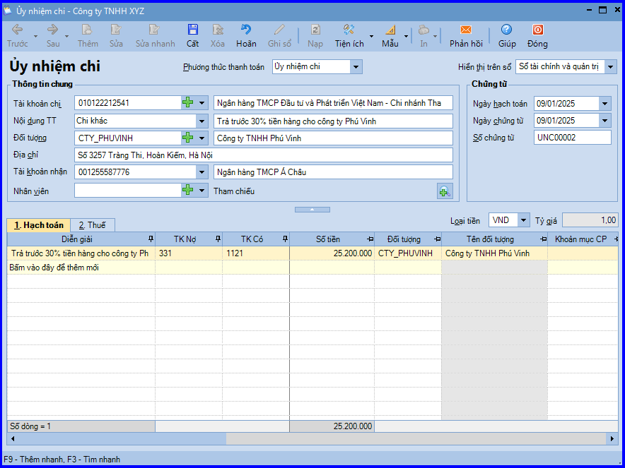
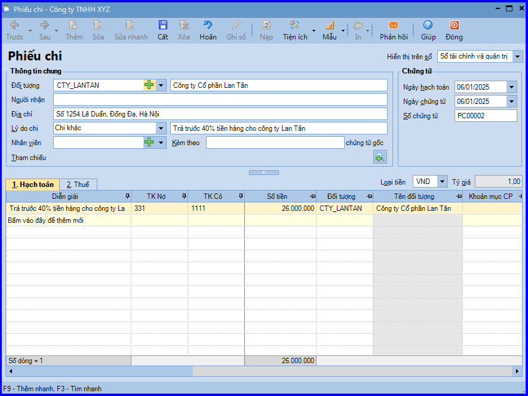

Hướng dẫn cách hạch toán ghi sổ nghiệp vụ trả trước tiền hàng cho người bán bằng tiền mặt hoặc tiền gửi ngân hàng trên phần mềm Misa
1. Trả trước tiền hàng cho nhà cung cấp bằng tiền gửi ngân hàng
Trường hợp công ty ứng trước tiền mua hàng cho nhà cung cấp, khi đó sẽ phát sinh các hoạt động sau:
- Căn cứ vào hợp đồng mua hàng, trên đó yêu cầu công ty chuyển trả trước một phần tiền mua hàng cho nhà cung cấp, nhân viên mua hàng sẽ yêu cầu chi tiền.
- Kế toán thanh toán lập Séc hoặc Ủy nhiệm chi, sau đó chuyển cho Kế toán trưởng và Giám đốc ký duyệt.
- Ngân hàng căn cứ vào Ủy nhiệm chi của công ty sẽ chuyển tiền vào tài khoản của nhà cung cấp, đồng thời lập giấy báo Nợ.
- Căn cứ vào giấy báo Nợ của ngân hàng, kế toán thanh toán sẽ hạch toán, đồng thời ghi sổ tiền gửi ngân hàng.
=> Nếu trường hợp trả bằng Séc thì nhân viên đề nghị chi tiền sẽ nhận Séc để chuyển cho nhà cung cấp
1.1. Cách định khoản hạch toán Hạch toán trả trước tiền hàng cho người bán bằng tiền gửi ngân hàng:
Nợ TK 331 - Phải trả cho người bán
Có TK 112 - Tiền gửi ngân hàng (1121, 1122)
1.2. Các bước hạch toán ghi sổ nghiệp vụ trả trước tiền hàng cho người bán bằng tiền gửi ngân hàng trên phần mềm Misa
- Vào phân hệ "Ngân hàng" => chọn tab "Thu, chi tiền" => chọn chức năng "Thêm\Chi tiền".
- Lựa chọn phương thức thanh toán.
- Chọn nội dung thanh toán là "Chi khác".

- Khai báo thông tin chứng từ, sau đó các bạn ấn "Cất".
- Chọn chức năng "In" trên thanh công cụ, sau đó chọn chứng từ chi tiền gửi cần in.
CHÚ Ý: Sau khi hạch toán xong nghiệp vụ trả trước tiền hàng cho nhà cung cấp bằng tiền gửi ngân hàng, phần mềm tự động chuyển thông tin của chứng từ vào Sổ tiền gửi ngân hàng.
2. Trả trước tiền hàng cho nhà cung cấp bằng tiền mặt
Trường hợp công ty ứng trước tiền mua hàng cho nhà cung cấp, khi đó sẽ phát sinh các hoạt động sau:
- Căn cứ vào hợp đồng mua hàng, trên đó yêu cầu công ty phải trả trước tiền mua hàng, nhân viên mua hàng sẽ yêu cầu chi tiền.
- Kế toán thanh toán lập Phiếu chi, sau đó chuyển cho Kế toán trưởng và Giám đốc ký duyệt.
- Thủ quỹ căn cứ vào Phiếu chi đã được duyệt, thực hiện xuất quỹ tiền mặt và ghi sổ quỹ
- Kế toán thanh toán căn cứ vào Phiếu chi có chữ ký của thủ quỹ và người nhận tiền để ghi sổ kế toán tiền mặt
2.1. Cách định khoản hạch toán Hạch toán trả trước tiền hàng cho người bán bằng tiền mặt:
Nợ TK 331 - Phải trả cho người bán
Có TK 111 - Tiền mặt (1111, 1112)
2.2. Các bước hạch toán ghi sổ nghiệp vụ trả trước tiền hàng cho người bán bằng tiền mặt trên phần mềm Misa
- Vào phân hệ "Quỹ" => chọn tab "Thu, chi tiền" => chọn chức năng "Thêm\Chi tiền".
- Chọn lý do chi là "Chi khác".

- Khai báo thông tin chứng từ, sau đó các bạn ấn "Cất".
- Chọn chức năng "In" trên thanh công cụ, sau đó chọn mẫu phiếu chi cần in.
CHÚ Ý: Trường hợp Thủ quỹ có tham gia sử dụng phần mềm, sau khi phiếu chi ứng trước tiền hàng cho nhà cung cấp được lập, chương trình sẽ tự động sinh ra phiếu chi trên tab "Đề nghị thu, chi" của Thủ quỹ. Thủ quỹ sẽ thực hiện ghi sổ phiếu chi vào sổ quỹ.
KẾ TOÁN DIỆU TÂM chúc các bạn làm tốt!
=============================
Nếu bạn muốn thành thạo các kỹ năng làm kế toán trên phần mềm Misa
Thì bạn có thể tham khảo "Khóa Học Thực Hành Kế Toán Trên Phần Mềm Misa" tại Công ty đào tạo Kế Toán Diệu Tâm
Trong khóa học này, bạn sẽ được dạy cách lên sổ sách, lập báo cáo tài chính trên phần mềm Misa
Chi tiết về chương trình đào tạo bạn xem tại đây nhé: Khóa học thực hành kế toán trên Misa
=============================
=============================
Nếu bạn muốn thành thạo các kỹ năng làm kế toán trên phần mềm Misa
Thì bạn có thể tham khảo "Khóa Học Thực Hành Kế Toán Trên Phần Mềm Misa" tại Công ty đào tạo Kế Toán Diệu Tâm
Trong khóa học này, bạn sẽ được dạy cách lên sổ sách, lập báo cáo tài chính trên phần mềm Misa
Chi tiết về chương trình đào tạo bạn xem tại đây nhé: Khóa học thực hành kế toán trên Misa
=============================